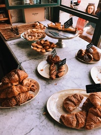
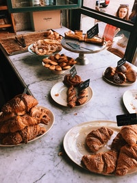

O café da manhã é uma refeição muito importante!
Depois dela iniciamos o nosso dia e é ótimo que você coma algo gostoso, nutritivo e que seja feito do seu jeitinho :)
 
 Para aqueles que já acordam com apetite eu indico um café com leite, que pode ser acompanhado com
pão, torrada ou tapica com queijo, etc.
Para os que não são tão adeptos de comidas sólidas pela manhã fica a dica de um cafesinho com
leite e alguma fruta de sua preferência!
Por último e não menos importante deixo uma dica para quem não toma café. Você pode optar
um pão com ovo e pasta de abate, pão com queijo ou panqueca com frutas e mel e um suquinho para acompanhar :)